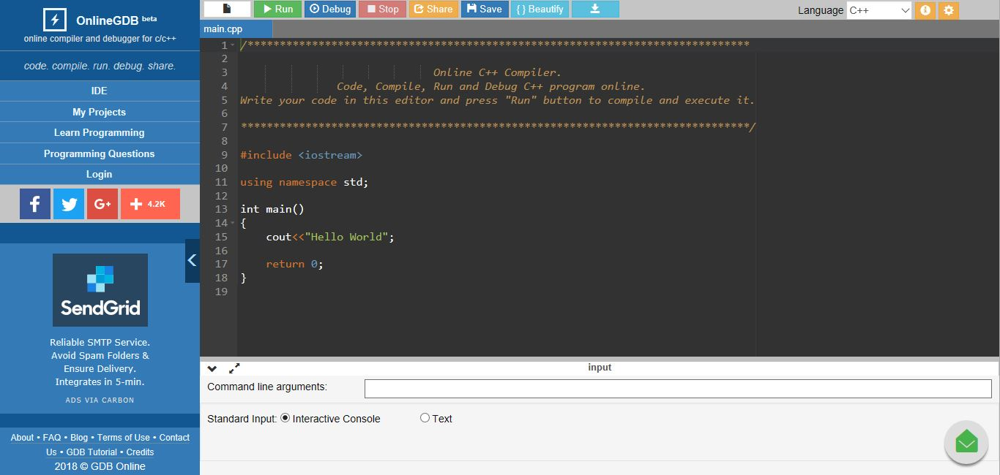

To begin learing C++, we first need a place to write and run code. For now, we can just use an online complier and then download something on our PC in the later future. Click here to get to the online compiler. A compiler is something that makes your code runnable by the computer. Now, we can take a look at the program that is there by default.
You should now be looking at something very similar to what's above.